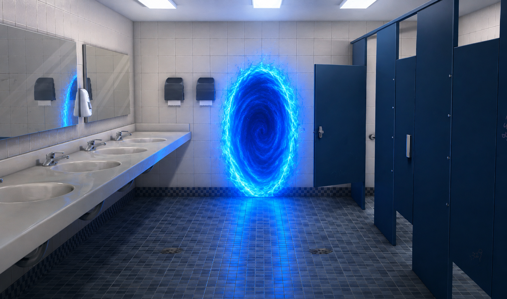
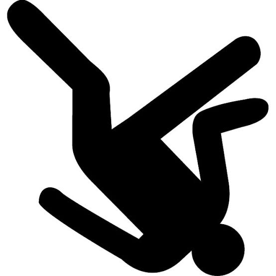

Uma aventura interativa
Escola do Futuro
Era uma manhã comum. A escola estava cheia de alunos, conversas pelos corredores e professores correndo para chegar às salas. Tudo parecia seguir a mesma rotina de sempre.
Iara caminhava pelo corredor, esperando o início da próxima aula, quando percebeu que precisava ir ao banheiro. Ela entrou e, por alguns segundos, tudo permaneceu normal.

De repente, uma luz estranha começou a surgir no fundo do banheiro.
Ela se aproximou, curiosa, e percebeu algo impossível: um portal brilhante havia aparecido diante dela. Sem saber o que estava acontecendo, ela observou aquela passagem misteriosa.
ENTRAR?

Após adentrar o portal desconhecido, Iara sente seu corpo inteiro formigar e sua cabeça parece girar, a garota passa por sensações inexplicáveis até chegar em um lugar paralelo.
O novo lugar parecia como sua escola antiga, mas tinha algo diferente.

Iara decide que a aventura é grande demais e volta para casa, mas sempre se pergunta o que teria encontrado.
Iara dá de ombros e vai em direção à saída do banheiro. Quando ela achava que tinha se livrado de uma situação anormal, o portal se abre logo abaixo de seus pés.
Iara cai em queda livre para dentro do portal, seu corpo inteiro formiga e seu estômago começa a embrulhar.

Quando se dá conta, a menina percebe que está no meio de um corredor escolar lotado de estudantes, os quais alguns a olham com cara de espanto e outros correm para falar com ela.

Enquanto andava procurando alguém para perguntar aonde estava, Iara percebe que robôs fazem a limpeza da escola e telas grudadas nas paredes mostram o horário de aulas..
Iara avista um aluno em cima de um skate voador conversando com um robô vestido de professor e decide falar com o menino.
Você conta toda a sua trajetória até aqui e ele não parece surpreso.
Ele diz que a escola estava elaborando projetos de viagem no tempo e que isso poderia acontecer. Ele te apresenta a um professor responsável pela situação.
Ele expressa uma reação indiferente e diz que você poderia ter falado com os robõs professores que ficam nos corredores.
Apesar disso, ele te leva à primeira aula do dia, mas diz que tinha outros assuntos para resolver e vai embora, te deixando sozinha (o).
Caminhando por daquela escola futurística, Iara percebe robôs fazendo limpeza dos corredores, telas grudadas na parede mostrando os horários das aulas e uma sala chama sua atenção.
A porta estava com a porta aberta e, lá dentro, Iara viu algo que parecia um holograma.
ENTRAR?
Iara entra furtivamente no que parece ser uma aula de história, o holograma mostrava fatos históricos como se acontecessem ali naquele espaço. Iara nunca imaginou ver algo assim com os seus próprios olhos
Durante a aula, o professor faz uma pergunta diretamente à você sobre o que deu início a guerra cibernética de 2109 que, para o seu azar, aconteceu 83 anos depois da realidade que você deixou após entrar no portal.
Andando por aqueles corredores, Iara se depara com uma aula acontecendo
Ao lado de um robô com o seu interior aberto, um professor explicava o funcionamento e a programação desses robôs inteligentes que limpavam a escola e ajudavam os alunos.
O professor e os alunos parecem surpresos, não por você ter vindo do passado, mas sim por Iara estar infiltrada (o) na aula.
Alguns estudantes a fazem diversas perguntas, outros tentam ajudá-la, até que um professor se aproxima.
O professor diz que a escola estava lhe esperando, mas não daquele jeito
O professor explica que a escola estava buscando meios de realizar viagem no tempo para se comunicar com alguém do passado, mas o portal acabou abrindo em um local inesperado
Você diz que precisa ir ao banheiro e aproveita a oportunidade para escapar daquela situação.
Andando por aqueles corredores, Iara se depara com uma aula acontecendo.
Ao lado de um robô com o seu interior aberto, um professor explicava o funcionamento e a programação desses robôs inteligentes que limpavam a escola e ajudavam os alunos.
Você senta em uma carteira vazia nos fundos e ninguém parece se importar com sua presença.
Você acompanha a aula e descobre a tecnologia fascinante daquele universo, se perguntando se poderia levar aquelas informações para a realidade de onde veio.
Ao sair do local, um professor ofegante por correr para te alcançar te aborda, dizendo que precisava te dizer algo importante.
Ao sair do local, um professor ofegante por correr para te alcançar te aborda, dizendo que precisava te dizer algo importante.
Iara percebe uma forte luz azul vindo da entrada do banheiro e decide checar.
Ao chegar lá, se depara com o mesmo portal de antes. Você acredita ser o portal que te levará para a realidade de onde veio.
Iara passa por aquelas mesmas sensações bizarras de atravessar o portal.
Mas, agora, o que você vê é aquela antiga escola de novo.
Ele te leva a uma sala que conta com a presença de físicos e engenheiros. O professor diz que o que eles tem para falar é de extrema importância
Iara sabe que, da realidade em que veio, as mudanças climáticas já afetam gravemente os ecossistemas e a população, mas nunca pensou que chegaria nesse estado tão rápido.
O que você fará?
Os especialistas parecem aliviados. Eles te entregam os materiais necessários e preparam a sua volta para casa. Aquele portal que Iara viu no início de sua jornada reaparece, mas, agora, você está completamente diferente de como entrou. Sua missão é grande e você está disposta (o) em ajudar a salvar o mundo.
Os especialistas parecem decepcionados e até um pouco desesperados. Eles dizem que entendem o seu lado e começam a preparar a sua volta para casa. O portal que você viu no início de sua jornada reaparece e sua consciência lentamente começa a pesar.
Iara passa por aquelas mesmas sensações estranhas de atravessar o portal. Agora, o que você vê é aquela antiga escola de novo.